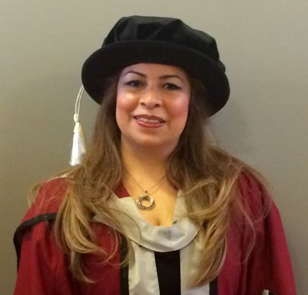

Sorour Tabatabaei

Summary
Innovative web designer with a strong foundation in physics (BSc) and nanotechnology (PhD), bringing a unique analytical and creative approach to building modern, user-friendly websites.
I’m dedicated to crafting intuitive online experiences.
Academic Qualification
-
2010-2014 PhD- Rheology and Computational Fluid Dynamics; Swansea University, Wales
-
2008-2010 MRes- Nanoscience to Nanotechnology;Swansea University, Wales
- 1990-1994 BSc- Applied physics; Azad University of Science and Technology, Tehran- Iran
Work Experience
-
2017-2019
Prognomics Ltd. Microfabrication of biomedical lab-on-chip (LOC)
-
2015-2017
Sun Chemical International Ltd & Swansea University; Rheological Characterization of Cold-Seal Adhesives in Shear and extension.
-
2014-2015
Part time-Matlab Lab Demonstrator / Part time-Process Analysis & Design Lab Demonstrator; Swansea University
Computer Skills
- Programming Languages: Fortran; Python
- Scientific Applications: MATLAB; Mathematica
- Design Software: Figma, Canva, Relume
Certifications
- Fundamentals of Logo design, Alison, 2023
- Start your Own Profitable Web Design Agency Business, Alison, 2023
- Microsoft Excel - Excel from Beginner to Advanced, Udemy, 2022
- Full WordPress Website For Beginners: Learn WordPress A-Z, Udemy, 2023
Other